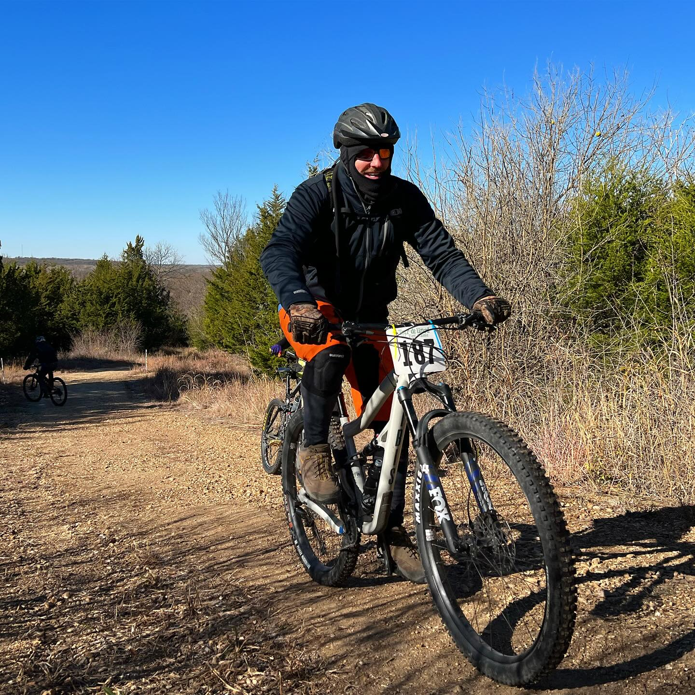

On Saturdays we like to host group rides throughout the county. These rides can last anywhere from 10-20 miles and are free of charge.
Our bike selection includes electric, gravel, or road bikes. We offer brands including Retrospec and State Bicycle.

Join us on November 11, 2024 for our 25 mile bike race through camp horizon in Arkansas City, Kansas! Registration is open now.
Join us on May 13, 2024 for Elrod's Cirque gravel bike race. We have 25, 50, and 100 mile routes through the back roads of Cowley County!
Our Bike Services
At Walnut Valley Outpost, we offer a variety of bike services to meet your needs:
- Professional bike assembly
- Tune-ups and repairs
- Custom bike fittings
- Accessory installation
- Bike rentals for all ages